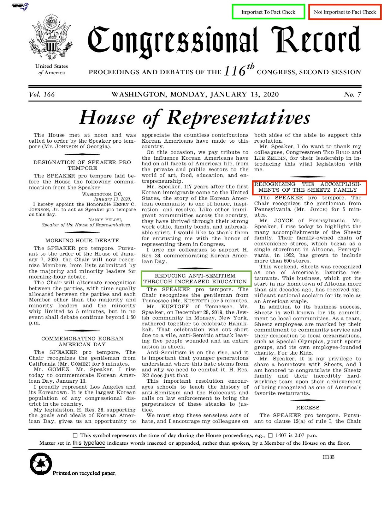
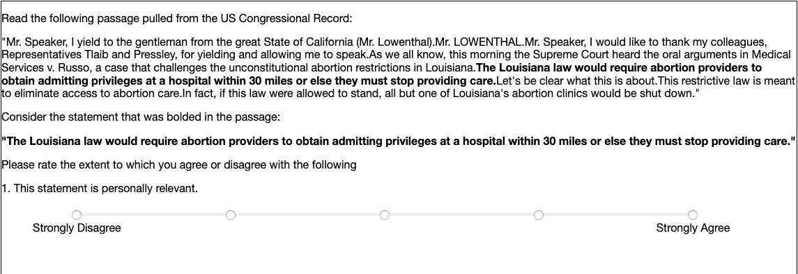
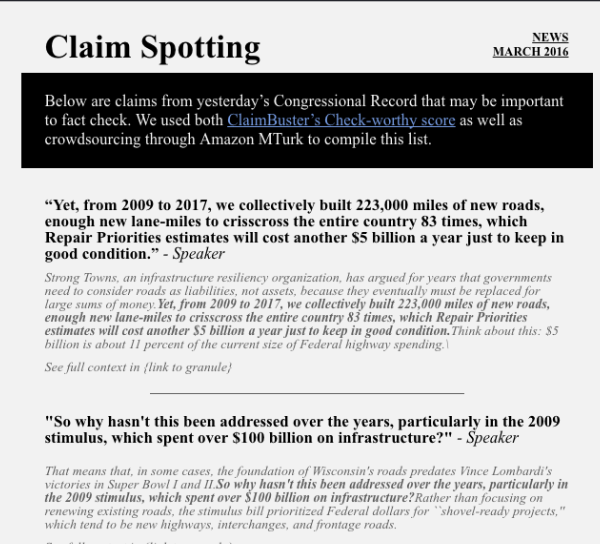

Claim Spotting
Comp_Sci397: Northwestern University Knight Lab
Winter 2020
Professor Nicholas Diakopoulos
Our project centered on using automated scoring and crowdsourcing to help journalists fact check the Congressional Record. The Congressional Record, which is a record of the proceedings and debates of the United States Congress produced every day, can be anywhere from ten pages to well over one hundred pages. Our goal was to create a system that would find the sentences in the Congressional Record that may be important for journalists to fact check because it is time consuming to digest the entirety of the record. Our system pulls the ten claims that Claimbuster, in conjunction with Amazon MTurk workers, determined may be most important to verify.
Filtering the Congressional Record
We first read through the Congressional Record and created a list of sections that we believed were not of high priority to journalists. For example, the Congressional Record contains all of the ritual proceedings such as a morning prayer and the Pledge of Allegiance as well as honorary obituaries and recognitions. The list of unimportant sections also contained the section entitled “Daily Digest” which is a summary of proceedings, as well as sections that contained long lists of names and names of bills.
Processing The Record
Once we knew what to filter out of the Congressional Record, we used the Congressional Record API to extract the record and sort it into sections. We used natural language processing through the Natural Language Tool Kit and Text Blob to filter out the sections that had titles in our manually curated list. To filter out acts, bills, and other pieces of law that might be quoted in the record, we used heuristics such as sections that started with an open parenthesis or numeric values because those indicated quoted, factual information.
We then split the text into sentences and put them into a spreadsheet to be sent through ClaimBuster and ranked on their check-worthy score.
Sending to ClaimBuster
ClaimBuster’s check-worthy scale ranges from 0 to 1, with 0 indicating sentences that are “non factual, subjective, or opinionated” and 1 indicating sentences that are more likely to contain a factual claim. ClaimBuster’s scores are assigned by an algorithm that takes into account parts of speech and tokens. As a result, ClaimBuster often gave high scores to sentences that contained long lists of names, titles of amendments, or other proper nouns but did not contain actual factual claims (for example, sentences that introduced whichever act Congress was about to discuss). As a result, we used Amazon MTurk to crowdsource the claims and further rank them in terms of fact check-worthiness.
Claimbuster Threshold
Due to the limitations in costs and execution time, we decided it would be infeasible to send all the claims everyday to online crowdsourcing. In order to work around this problem, we decided to establish an initial threshold, where we would send a max number of claims that fall above the threshold to MTurk. We are still in the optimization phase of this threshold, but after some initial tests, we found that claims having a score above the median score would be interesting enough to send to MTurk.
Creating the Amazon MTurk Survey
To crowdsource fact check worthiness, we looked at Harcup and O’Neil’s research into newsworthiness criteria. Of their list of 11 criteria, we chose 4: relevance (personal, societal, economic, and political), conflict, magnitude, and surprise. We created a survey through Amazon MTurk that showed MTurk workers a sentence from the Congressional Record as well as a few sentences of context from before and after the sentence. The workers rated the extent to which they agreed or disagreed with sentences such as: “This statement is personally relevant” and “This statement is surprising or unexpected.” The output of the MTurk survey was a spreadsheet containing each sentence as well as its scoring in terms of the seven news criteria plus an overall average newsworthiness score.
Errors in Results
Once we have received the ratings from the MTurk crowdsourcing, we will have two distinct sources of feedback on our claims. We will be considering the claims that have exceeded the initial threshold and which have returned crowdsourcing results as well. Our intention with adding this additional layer of validation is to eliminate as many false positives as possible from the initial Claimbuster round. For instance, if a claim scored very highly in Claimbuster but turned out lower ratings in MTurk, then that could be an indication of a false positive and will receive a lower weight for consideration. Although it is less impactful for our final deliverable, we may also consider weighting false negatives higher if they scored lower on Claimbuster but scored highly in Mturk. Ultimately, we calculated our error as a weighted F-score, using a beta value that weights false positives more than false negatives.
ClaimBuster in conjunction with Amazon MTurk Crowdsourcing
Our next step was then to reduce this F-score error as much as possible by adjusting the weights considered in the Claimbuster score and the MTurk ratings. Looking at both thresholds, we determined an algorithm that ranked claims on a combination of ClaimBuster and MTurk scores. First, the algorithm normalizes both the average MTurk rating and the ClaimBuster score to make sure they are on the same scale. Next, the algorithm assigns a weight to each score and computes the sum. This final sum is the confidence value for each individual claim, and the final ranking for each day will be determined by the sum that is obtained. We are still in the optimization phase of determining the correct weights for this algorithm to ensure we are sending ideal claims for journalists, but the intention is to reduce the number of claims scored highly that wouldn’t make sense for investigation. We hope as we conduct more scoring and crowdsourcing as well as receive feedback from journalists and other users, we can continue perfecting this algorithm as well as improving our filtering.
Newsletter Design
To determine how many claims we wanted in the final newsletter, we created mockups with differing amounts of claims and context given. To keep the newsletter minimalistic and sleek, we decided to select ten claims for the newsletter and give one sentence of context before and after the claim as well as a link to the entire section from which the claim was pulled to allow for further context. We chose the top ranked claims based on the aforementioned algorithm that combined ClaimBuster and MTurk scores.
Final Deliverable Mockup
To get to our final deliverable of the newsletter, we created a script that automates the aforementioned process. First, we use the Congressional Record API to scrape the record and we use natural language process to filter out sections that are not important to fact check and to split the remaining section into individual sentences. Those sentences are sent to ClaimBuster and returned as a spreadsheet with the claims and their ClaimBuster score. We eliminate any sentences that have a ClaimBuster score of less than 0.5 and send the remaining claims through Amazon MTurk. The results of the MTurk test are returned in a spreadsheet and another script cleans the results, giving back a spreadsheet holding the claims with their MTurk scores for each newsworthy scale (relevance, conflict, surprise, and magnitude).
Final Ranking
To compile the final ranking of claims, our goal was to create an algorithm that would score the claims based on both the ClaimBuster and MTurk scores, taking into account the error rate of both.